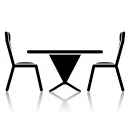
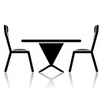

Смачна їжа є не тільки потребою для життя людини, але й джерелом величезного задоволення, посилити яке можливо тільки одним способом — скуштувати страви, приготовані в ресторані Steak & KO. Адже тільки тут готують найкращі стейки у Львові — втілення мрії гурманів та справжній феєрверк смаку для прихильників американської національної кухні.
Для вас — найкращий вибір смачних стейків у Львові Технологія приготування страв в грилі — один з найдавніших винаходів людства, який з плином часу не втратив своєї актуальності і набув шаленої популярності. М’ясо та овочі, смажені на решітці, не тільки зберігають природню насиченість смаку, але й отримують посилений аромат. Ви переконаєтесь в цьому, відвідавши та скуштувавши страви, приготовані кращими майстрами барбекю у Львові — поварами ресторану Steak & KO.
Фотогалерея


Ми пропонуємо
Стейки в Steak & KO — смак, який неможливо забути
Меню ресторану Steak & KO вражає багатим асортиментом страв та різноманітністю їх компонентів. Але головним номером кулінарної програми є стейки — величезні і мегасмачні. Якщо ви ще не знаєте, де подають надзвичайно смачні стейки у Львові, запрошуємо у наш заклад.
Ресторан Steak & KO у Львові — створений для тих, хто не може прожити ні дня без ароматного шматка смаженого м’яса.


МЕНЮ
Мега тарелі Steak & KO. Нові сети
Пивні спеціалітері та гарячі сковорідки
Сезонне МЕНЮ
Соуси, десерти
Кава, чай, напої. Алкоголь
 
